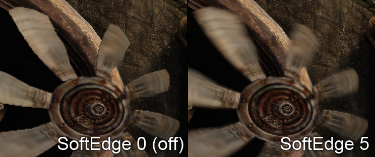
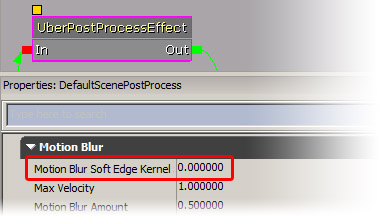
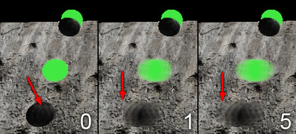
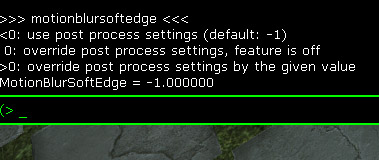
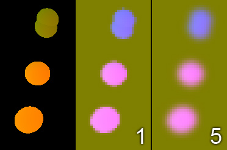

MotionBlur SoftEdge Post Process Feature
|  |
| SoftEdge allows motion blur to appear outside of the moving object. |
Overview
Recommended read: MotionBlur
Using the SoftEdge feature further improves the quality of the motion blur to become a more film like effect. In film cameras the so called shutter remains open for a period of time to capture more light. Moving objects appear blurred along their movement direction. Our motion blur is based on a post processing effect that blurs the image content by averaging multiple texture samples. Blurring outside of the object as seen in film images is possible but requires extra effort. We call our solution for the problem the motion blur SoftEdge feature.
Knowing about the technical properties of the feature allows to tweak the look and performance depending on the application needs.
Activating SoftEdge and setting the right parameter
The SoftEdge feature can be activated in the postprocessing chain in the uber post process node:
|  |
| 0 keeps the SoftEdge feature deactivated (fast), bigger values specify the radius (1..10 is a good range) |
When using the SoftEdge feature you can increase the max velocity as stronger motion blur looks better with the feature enabled.
Results
|  |
Left: The blurring is only happening within the object
Middle: Using the feature blurs outside the object
Right: Using a bigger radius fully extends the effect. |
Using the feature costs some performance. A bigger radius costs a bit more (more samples during the blurring needed). A bigger value also can distort the motion of multiple differently moving objects if they are too near to each other. As the middle image shows the value also can be too small and then the moving object appears cut. Our experience showed even small values give good results (e.g. 1). For stronger motion a value of 5 or 10 might be needed. We could compute the value based on the max velocity but we prefer to have the control to pick a smaller value to control performance and look.
Changing the values at run time
The console command MotionBlurSoftEdge allows to override the strength that is specified in the post processing chain. Use the command without parameter to get the help text. The command is best used in some frozen state (e.g. when using the freezeframe command or some game pause). Note that MotionBlurSkinning cannot be frozen as the current implementation is updated each frame and if some objects are frozen in time the per bone information is lost.
|  |
| The help of the console command is shown. |
After some experimentation you should be able to find a good value and use the setting in the post processing chain.
Implementation
Our motion blur implementation is done in a post process where the scene is blurred in the direction of the motion. The motion direction comes from the velocity texture (screen space 2D motion vector is encoded as a color) and from the camera motion. This is explained in MotionBlur. Graphics hardware is much fast in gather (regular texture mapping) methods than in scatter (distribute data to multiple destinations) methods. For motion blur we need to know for the current pixel from which neighbor pixels it receives content.
Without the SoftEdge feature we just assume the motion at the current pixel is the same for the neighbors as well. In order to avoid color leaking we reject pixels that have no or a different motion direction. The solution looks clean but doesn't blur outside of the object borders.
With the SoftEdge feature we blur the intermediate velocity texture with a simple Gaussian blur. Blurring a motion vector would result in a loss in length for the motion vector. To compensate that we also blur another channel (0 for no object motion, 1 for object motion). We can compensate for the motion strength loss by dividing by this channel.
The following image shows how the internal buffers look like (colors are different because the motion vectors are encoded differently):
|  |
Left: Velocity texture
Middle: Blurred velocity texture (small radius)
Right: Blurred velocity texture (big radius) |
Note that the blurred image is much lower in resolution. The loss in detail is not visible in motion and further hidden by bilinear filtering the texture.
During post processing we use the blurred velocity vector to get the object direction we use for sampling. We also sample in the camera motion direction and combine the result.
Performance
We don't consider the current implementation final but it seems to be fast enough to be usable. With strong motion it might get a bit worse as the texture cache can affect this number a lot. We are looking into optimizing that.
Important!
You are viewing documentation for the Unreal Development Kit (UDK).
If you are looking for the Unreal Engine 4 documentation, please visit the Unreal Engine 4 Documentation site.